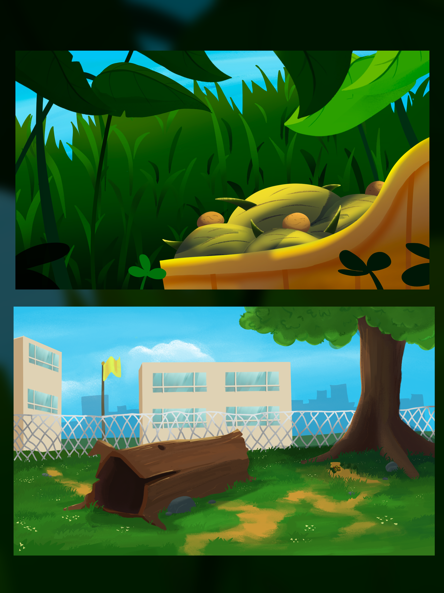
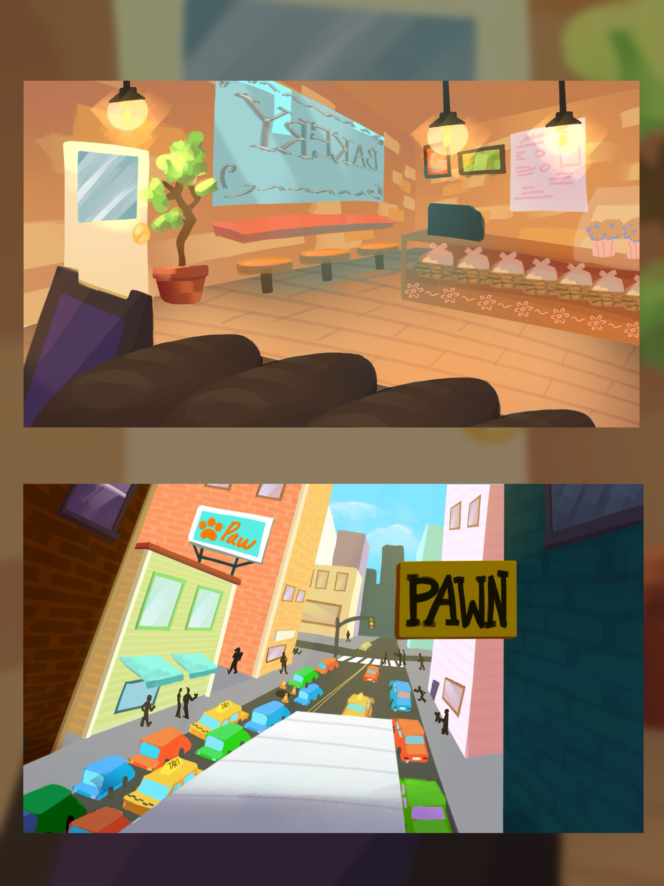
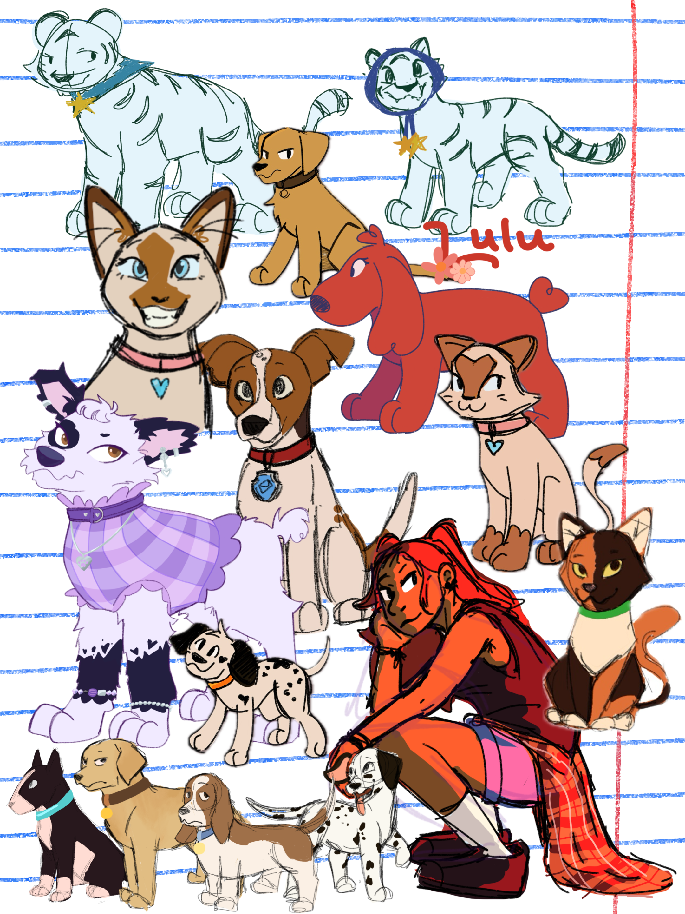
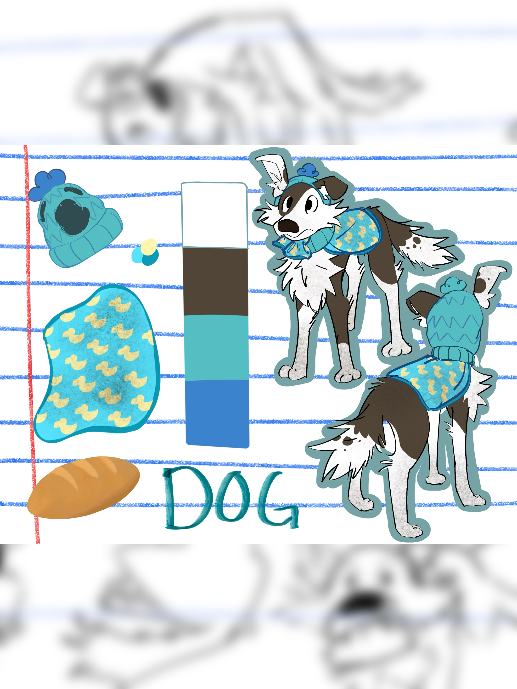
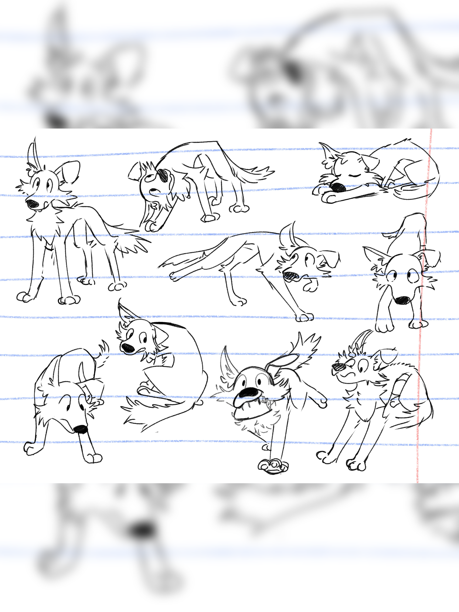
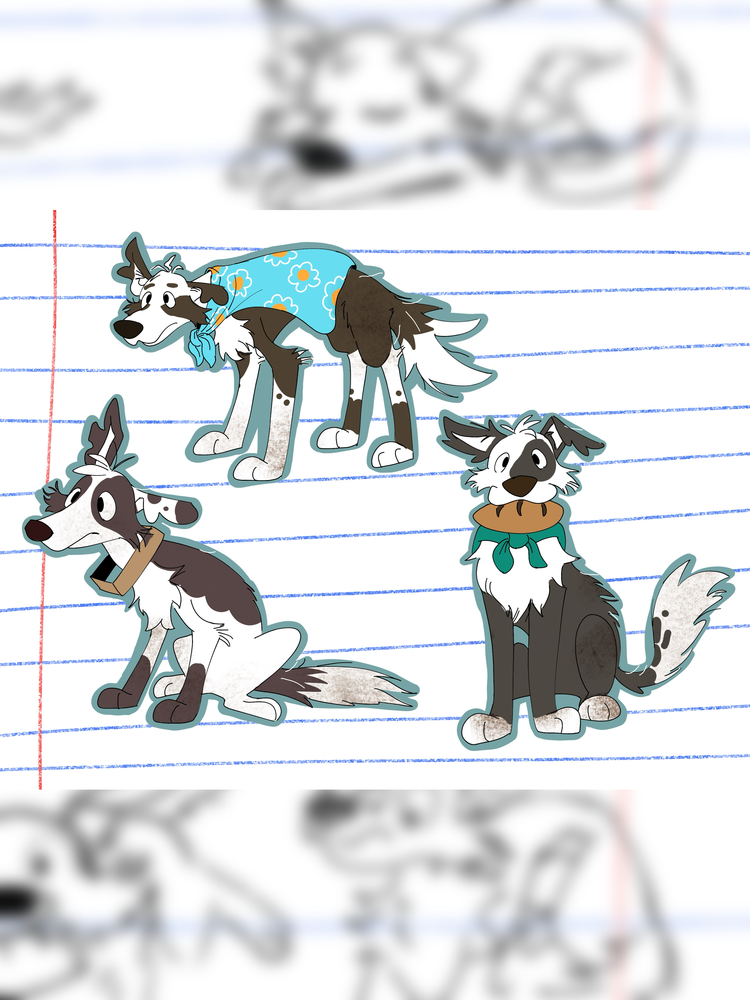
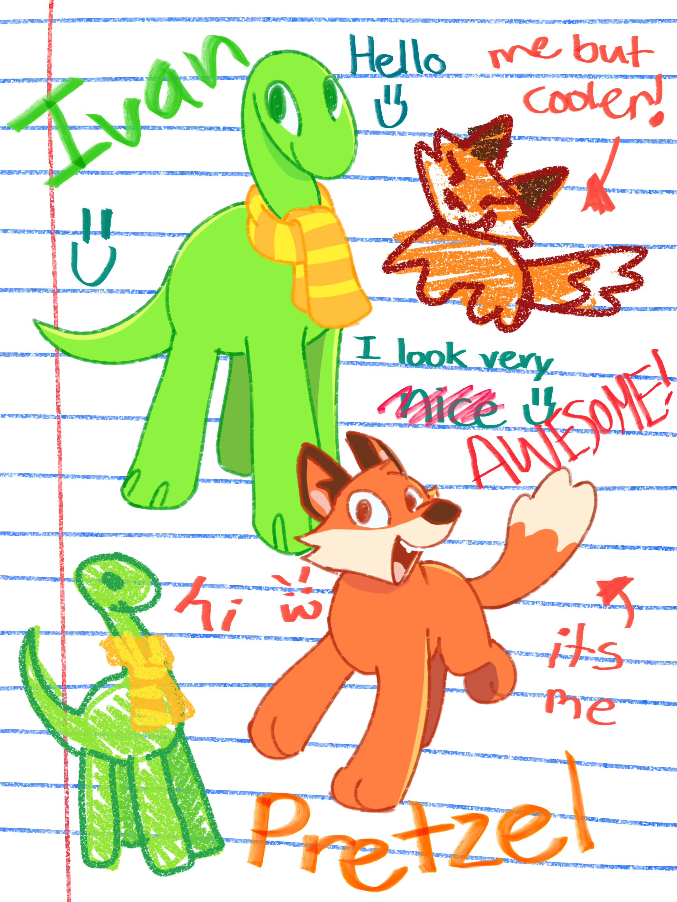

Rosabella Santiago - El Camarón
Hi hi!! My name is Rosabella! I’m a 2D animator and artist who loves drawing animals. A lot of my inspiration for characters has been through my stuffed animals which I love them all so much. I really love being able to create fun, heartfelt moments while also focusing on moments of reflection. I love playing rhythm games which I unfortunately don’t have much free time to play right now. As nice as it would be to finally have time to play games once I finish my film, I still have a journey to continue! I’m excited to continue to learn and experience new things! YAY🦝






